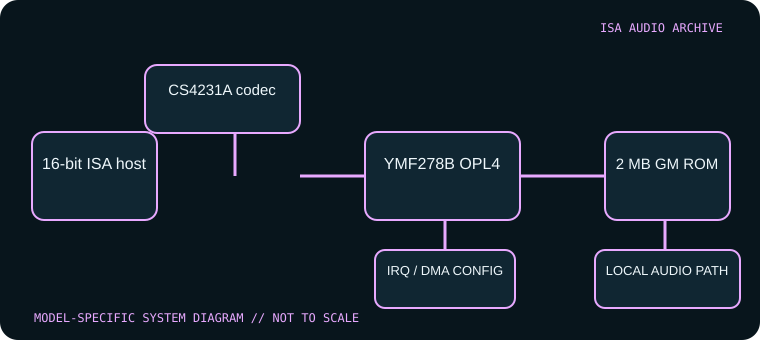

[ INDIVIDUAL COMPONENT // SOUND HARDWARE ]
MediaTrix AudioTrix Pro (EBMT005E)
The AudioTrix Pro is a high-feature 16-bit ISA board using a Crystal CS4231A codec and Yamaha YMF278B OPL4 synthesis. It is not a generic AudioTrix-branded card: part number, SCSI/effects/RAM expansion and revision determine which optional facilities are present.

Model-specific specifications
| Catalog identity | MediaTrix AudioTrix Pro; part references EBMT005E / MT005-E004. Verify both silkscreen and installed daughterboards. |
|---|---|
| Bus / host | 16-bit ISA PC-compatible system. Period DOS and Windows drivers configure the card’s codec, MIDI and legacy compatibility resources. |
| Sound engine / I/O | Crystal CS4231A-KL codec, Yamaha YMF278B OPL4 and YAC513 DAC; stereo full-duplex PCM up to 44.1 kHz with different recording/playback rates. Onboard 2 MB ROM supplies GM samples; optional RAM/effects/SCSI modules are separate. |
| IRQ | Software-configurable interrupt assignment through the AudioTrix setup utility/driver; the exact valid selection depends on the active driver profile and any other cards. Record the chosen setting from the manual and installation. |
| DMA | The 16-bit codec uses configured ISA DMA for PCM. AudioTrix utility/manual controls the selection; preserve the actual low/high DMA assignments rather than guessing based on an SB-compatible default. |
| Software / host compatibility | DOS/Windows drivers support SB-compatible, WSS, MPU-401 and GM pathways. The board’s MPU response can support some software expecting intelligent mode, but compatibility still depends on driver configuration. Optional effects and SCSI require their hardware modules. |
| Connectors / expansion | Line/mic/audio, game/MIDI, SCSI module, effect processor and sample RAM options. Check board and daughterboards; the installed 2 MB ROM does not prove optional RAM is present. |
Compatibility & configuration notes
AudioTrix Pro is readily confused with later or OEM MediaTrix products. The product references name the model and part numbers and document its distinctive CS4231A/YMF278B pair, ROM wavetable, full-duplex capability and optional expansion. Resource configuration is handled in software; values should be transcribed from the matching manual/driver instead of generalized. Preserve the original manual and installation media with the card because several advanced functions depend on drivers or optional modules.
- Photograph model/revision markings, resource switches or jumpers, connector panel and installed options before installation.
- For every configured IRQ, DMA channel, I/O address and driver, record the actual setting used by the host; do not rely on a family name or an assumed default.
- Power down and unplug the host before fitting or removing an ISA card; retain period setup tools and documentation with the specimen.
Sources & archival documentation
- DOS Days — MediaTriX AudioTrix ProModel/part number, chip and feature reference for AudioTrix Pro.
- DOS Days — AudioTrix Pro original manual scan (PDF)Archived user manual with installation and configuration procedures.
Where related model variants exist, the original manual and the physical card’s complete part/revision marking take precedence over generalized family summaries.